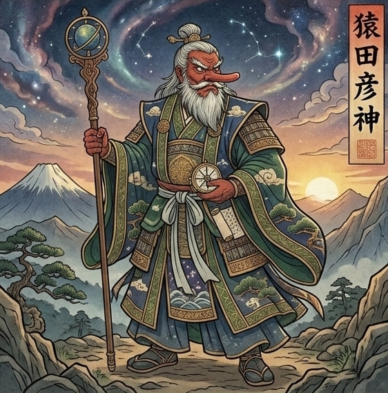

まるっと鑑定書
ご家族みなさまの守護と本音
ご家族お一人ずつ、守っている神様と本音。
そして、家族の「関わり」を
ひとつの図にしてお届けします。
🌙 ご家族の関わり図
いいところ
反発するところ
未来を開くヒント
🌙 お一人ずつの鑑定

息子さん
守っている神様 猿田彦命
道を開いて、
外へ連れ出す神様に守られている子です。
いいところあなたは、
あの子にとっていつでも帰れる場所です。
あの子にとっていつでも帰れる場所です。
反発するところ心配して聞くほど、
口数が減ります。
連絡が少ないのは、
親を忘れているからではなく、
外で踏ん張っているとき。
口数が減ります。
連絡が少ないのは、
親を忘れているからではなく、
外で踏ん張っているとき。
未来を開くヒント近況を尋ねるよりも、
「いつでも帰っておいで」と一言だけ伝えてください。
返事を求めず、
静かに見守ることが、
息子さんの安心につながります。
「いつでも帰っておいで」と一言だけ伝えてください。
返事を求めず、
静かに見守ることが、
息子さんの安心につながります。

娘さん
守っている神様 木花咲耶姫
華やかさの奥に、
細やかな気づかいを隠している子です。
いいところあなたのことを、
家族の中でいちばん見ているのはこの子です。
家族の中でいちばん見ているのはこの子です。
反発するところ気持ちを先回りして言い当てられると、
心を閉じてしまいます。
心を閉じてしまいます。
未来を開くヒント先回りして答えを伝えるのではなく、
一緒に出かける時間をつくってください。
並んで歩いているときに、
娘さんは本音を話しやすくなります。
一緒に出かける時間をつくってください。
並んで歩いているときに、
娘さんは本音を話しやすくなります。

ご主人
守っている神様 大己貴命
家族を背負うことで、
自分を保ってきた方です。
いいところ何も言わなくても、
あなたの土台であり続けています。
あなたの土台であり続けています。
反発するところ弱音を見せられず、
頼られるほど無口になります。
あなたには「冷たい」と映りやすいところです。
頼られるほど無口になります。
あなたには「冷たい」と映りやすいところです。
未来を開くヒントお願いごとを伝える前に、
まず感謝の言葉を添えてください。
感謝から会話を始めることで、
ご主人の本音が少しずつ動き出します。
まず感謝の言葉を添えてください。
感謝から会話を始めることで、
ご主人の本音が少しずつ動き出します。
ご家族一人ずつ、
本当は何を考えているのか、
あなたがどんな存在なのかまで
書いてお届けします。
深雪